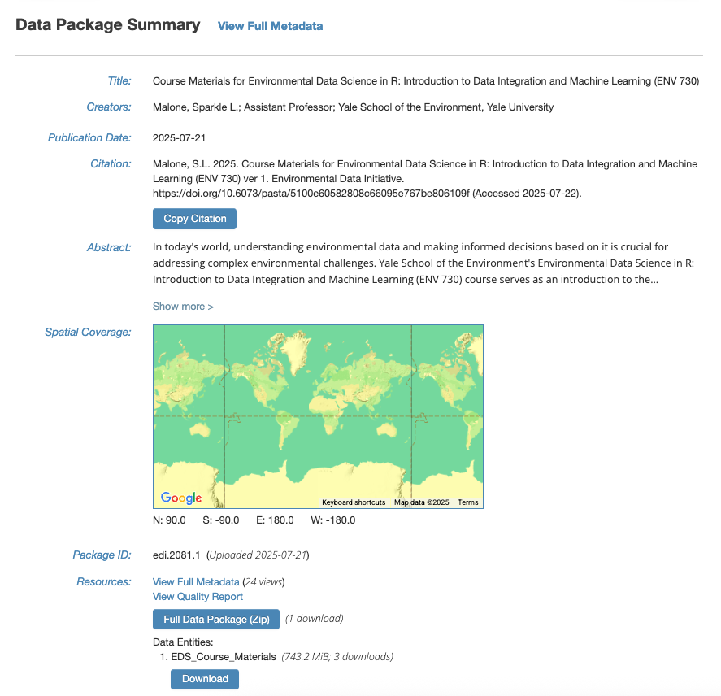
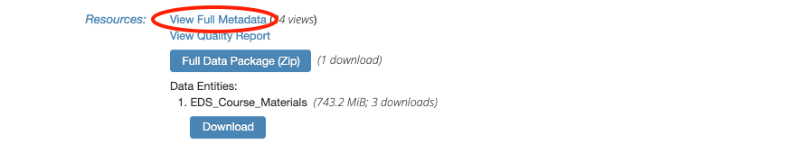
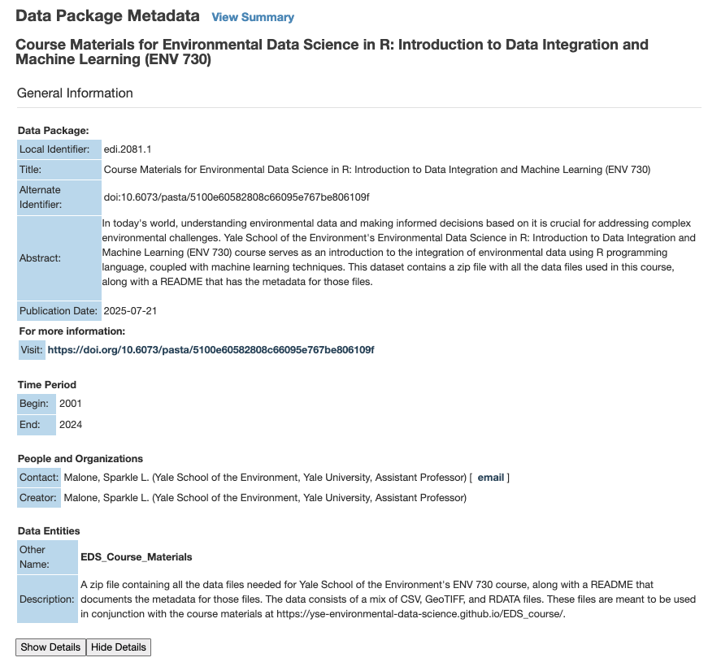
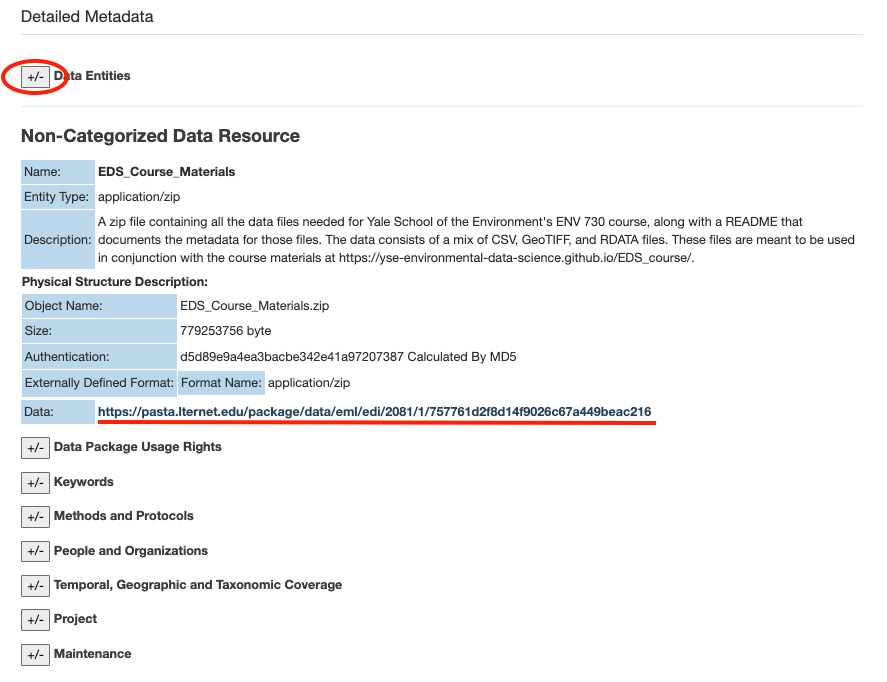
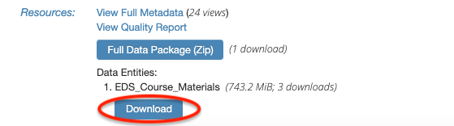

## --------------------------------------------- ##
# EDI Download -----
## --------------------------------------------- ##
# If you don't have the curl package, install it first
# install.packages("curl")
# Load package(s)
library(curl)
# Let's download EDS_Course_Materials.zip from this EDI package:
# https://doi.org/10.6073/pasta/5100e60582808c66095e767be806109f
# Paste the direct URL to EDS_Course_Materials.zip
edi_url <- "https://pasta.lternet.edu/package/data/eml/edi/2081/1/757761d2f8d14f9026c67a449beac216"
# Download the zip file to your local computer
curl::curl_download(url = edi_url,
destfile = "EDS_Course_Materials.zip",
quiet = F)
# Unzip it into a folder called "data"
unzip("EDS_Course_Materials.zip", exdir = "data")Course Setup
Data Acquisition
The data files required for this course are available through the Environmental Data Initiative (EDI) repository. EDI is a data repository that hosts ecological and environmental data for the long-term.
There are various ways to acquire data from data repositories. The method that a lot of people are accustomed to is by clicking “Download” to manually grab the files and then dragging them to the appropriate folder on their local computer. This method works, but it is not the most reproducible way to run your workflow since it’s difficult to document the clicking of your cursor.
Instead, you can acquire data programmatically with R and save all the steps in this part of the workflow in a script. If you, or anyone else, want to reproduce the same results in the future, you can just rerun the same script.
To get the data programmatically through R, first navigate to the data package landing page at: https://doi.org/10.6073/pasta/5100e60582808c66095e767be806109f

The landing page shows a summary of the metadata for this data package. Metadata, or data about data, gives context to the variables in the dataset by documenting what was measured, who made the measurements, when and where were they made, and why was the data collected/created in the first place.
We will need the direct URL to “EDS_Course_Materials.zip” in order to download it through R. To get this specific URL, click on “View Full Metadata”.

This will bring us to a page with detailed descriptions of everything associated with this data package.

Scroll down to “Detailed Metadata” and click on the plus/minus symbols next to “Data Entities” to show more information on “EDS_Course_Materials.zip”.

This section describes what the file is for, along with additional metadata such as the file size and format. Copy the URL for this file.
Once you’ve got the URL, navigate to your workspace/working directory in RStudio for this course. You can check your current working directory by running getwd(). If the output of getwd() does not return the file path to your folder for this course, you will need to run setwd(dir = "...") by replacing ... with the file path of your choice.
Then follow the code below to download and unzip “EDS_Course_Materials.zip”.
Having trouble downloading?
If you’re having issues downloading the zip file through R, navigate back to the data package landing page on EDI and click on the Download button under “Data Entities: 1. EDS_Course_Materials”. 
Due to the way the data has been packaged, you may see this folder organization once you’ve unzipped the file:
your-working-directory/
├── data/
│ ├── __MACOSX/
│ └── EDS_Course_Materials/
│ ├── EDS_Course_Materials_README.pdf
│ ├── Elevation.tif
│ ├── Elevation.tif.aux.json
│ ├── ENV720-MOD13A3-061-results.csv
│ ├── final_model.RDATA
│ ├── FLUXNET_FLUXES.RDATA
│ ├── FluxNet_Sites_2024.csv
│ ├── GlobalClimate.tif
│ ├── GlobalClimate.tif.aux.json
│ ├── GlobalSoil_grids.tif
│ ├── GlobalSoil_grids.tif.aux.json
│ ├── MODIS_IGBP_2001-2022_CT.tif
│ ├── MODIS_IGBP_2001-2022_CT.tif.aux.json
│ ├── MODIS_IGBP_2001-2022_CT.tif.aux.xml
│ ├── Monthly_Fluxes.RDATA
│ ├── RANDOMFOREST_DATASET.RDATA
│ ├── SensitivityProducts.RDATA
│ ├── TERRA_PPT_2021_CT.tif
│ └── TERRA_TMEAN_2021_CT.tif
│
└── more_stuff/ For the purposes of this course, we need to move all the content under data/EDS_Course_Materials to just the data folder. Run the following code to do so.
## --------------------------------------------- ##
# Moving Files -----
## --------------------------------------------- ##
# List all the files inside "data/EDS_Course_Materials"
names <- dir(file.path("data", "EDS_Course_Materials"))
# Create a function to move all the files from "data/EDS_Course_Materials" to "data"
relocate_function <- function(file_name){
file.rename(from = file.path("data", "EDS_Course_Materials", file_name),
to = file.path("data", file_name))
}
# Apply the function to all files
lapply(names, relocate_function)
# Delete the now empty EDS_Course_Materials folder
unlink(file.path("data", "EDS_Course_Materials"), recursive = TRUE)If you’ve followed all the steps correctly, your working directory should now look something like this:
your-working-directory/
├── data/
│ ├── __MACOSX/
│ ├── EDS_Course_Materials_README.pdf
│ ├── Elevation.tif
│ ├── Elevation.tif.aux.json
│ ├── ENV720-MOD13A3-061-results.csv
│ ├── final_model.RDATA
│ ├── FLUXNET_FLUXES.RDATA
│ ├── FluxNet_Sites_2024.csv
│ ├── GlobalClimate.tif
│ ├── GlobalClimate.tif.aux.json
│ ├── GlobalSoil_grids.tif
│ ├── GlobalSoil_grids.tif.aux.json
│ ├── MODIS_IGBP_2001-2022_CT.tif
│ ├── MODIS_IGBP_2001-2022_CT.tif.aux.json
│ ├── MODIS_IGBP_2001-2022_CT.tif.aux.xml
│ ├── Monthly_Fluxes.RDATA
│ ├── RANDOMFOREST_DATASET.RDATA
│ ├── SensitivityProducts.RDATA
│ ├── TERRA_PPT_2021_CT.tif
│ └── TERRA_TMEAN_2021_CT.tif
│
└── more_stuff/